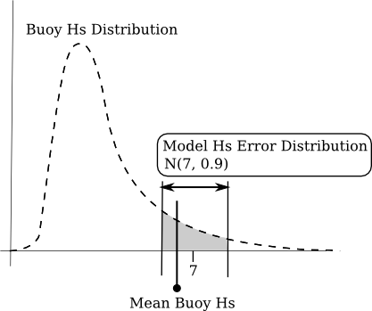
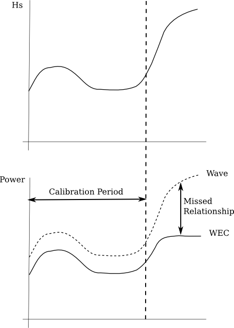

Mackay, E. B., Bahaj, A. S., & Challenor, P. G. (2010). Uncertainty in wave energy resource assessment. Part 1: historic data. Renewable Energy, 35(8), 1792-1808.
This paper applies the Measure-Correlate-Predict method, often seen for wind energy resource assessment, for the assessment of a wave energy converter. An emulator is derived for two wave models, calibrated to a buoy location with measured data which is then used to extend the hindcast for the buoy location.
Touches on the issue of risk, particularly financial risk, from not predicting wave conditions correctly.
“ocean waves are a variable resource, impossible to predict precisely. This increases the risk associated with the development of a wave energy farm, since the upfront cost of a project is large and the return is variable and imprecisely known.”
A level of confidence is also required on the estimates
“It is therefore necessary to estimate the expected yield from the wave farm, the variability in power production and confidence bounds on these estimates.”
Three broad categories for uncertainty are defined:
- “Uncertainty in future wave conditions.
- Uncertainty in conversion from wave energy to electrical energy.
- Uncertainty in availability of machines.”
[Are these categories exhaustive? I’m not sure.] This paper is focussed on the first type, but also considers the other two briefly.
Uncertainty in energy conversion is related to the parameterisation of energy output to significant wave height and energy period ($H_{s}, T_{e}$) sea states. In order to achieve this a theoretical sea spectrum is populated through some model, which then undergoes some validation through physical testing. As not all sea states can be tested, there lies some uncertainty in this process. Additionally, a lack of directional information may effect the performance of certain devices.
Mackay claims that,
“On the whole, the effect of parameterisation is less important for higher $H_{s}$, since spectra tend toward standard shapes in larger seas.”
[Is this true? I’m not sure the Hebmarine data reflects this. I will have to check.]
Array interactions may also change the wave field and therefore the output from devices. Assuming the resource model does not the impact of the devices, then the power matrix for a single device may not represent the average output of an array.
Finally, mechanical failures are mentioned but, “at present it is difficult to put a realistic figure on this type of uncertainty.”
The approach is attempting to extract a mean and long term, interannual, variability at a specific site. The challenge is getting long term validation data for that site,
“It is rare that at a site of a proposed wave farm there will be an existing long-term dataset.”
Mackay uses a Measure-Correlate-Predict (MCP) approach, common in the wind industry to correct longer term data from a different source for the location of interest. He summarises the procedure, thus:
“In the MCP procedure short-term measurements recorded at the site of a proposed development (the predictor site) are correlated with concurrent measurements taken at a nearby reference site for which long-term data exists. This calibration is then applied to the historic data at the reference site to estimate the historic climate at the predictor site.”
There is an issue with getting long-term historical data for many location, “there is relatively little in-situ data available for the most energetic locations”, thus numerical models are often used as the long term reference. Large scale numerical models are often used to provide boundary conditions for smaller mesoscale models (references [14] & [15], might be handy), with the data being calibrated first [rather than the model?].
So, I think that was an attempt at justification of the use of model data as an input, so the paper now returns to question of uncertainty when using such data:
“However, the issue of uncertainty in energy yield predictions, necessary for the economic assessment of a wave energy project, has not yet been addressed.”
“the problem of making accurate yield predictions with quantified uncertainty needs to be considered.”
The outputs of two numerical models of the EMEC region are used to generate a historic yield for a Pelamis. The results are elucidating:
“over an 8-year period covered by both datasets, the mean power produced by the Pelamis calculated from each hindcast differs by over 20%.”
Therefore the model outputs are calibrated, and a confidence bound is placed on the calibrated outputs.
This section discussed the challenges of building a statistical emulator for the outputs of a wave model.
It begins with the odd taxonomy of model errors in this paper, with a distinction being given between internal and external errors. They have this meaning:
If we try and relate this to Roy (2011), then internal errors refer to model form and approximation uncertainty, whilst external errors refers to model input uncertainties but fails to mention uncertainty in calibration parameters. Similar to Bayesian validation papers, this process is less concerned with improving the numerical model in light of the uncertainty,
“In this section we are concerned with a description rather than diagnosis of model errors.”
A good point here about the nature of models versus measurement regarding the spatial and temporal scale of grids,
“The spatial and temporal variability of wave conditions will therefore result in differences between measurements and modelled data, even if both are perfectly accurate. The larger scales over which wave models estimate conditions result in time series of model data appearing smoother than those from in-situ measurements.”
The issue with wind speed under-estimation leading to wave height under-estimation is mentioned.
There is now a discussion of mean and random errors. The meaning of this part is not very clear, frankly. It basically a discussion about bias and random errors, or epistemic and aleatory uncertainty. I think the argument is that the model outputs would contain a statistical mean and variability, that is represented by some stochastic representation, for particular quantities, like $H_{s}$. However, there is an attempt to associate the output errors with the input and model form uncertainties,
“It can be difficult to distinguish between the mean and random model errors, since the error at a given location is the integrated effect of mean (predominantly internal) and random (predominantly external) errors over the whole wave field.”
A statistical representation of the model output is challenging as, “the biases are non-stationary with location and with time.” [To me, this is perfectly logical, as the whole point of a model is for complex domains, while the validity of the internal physics of a wave model varies across the wave steepness.]
“it is difficult to define and adjust for a ‘mean error component’ since varying conditions lead to varying amounts of internal and external errors occurring and aggregating over the model domain.”
Mackay makes a good point that the epistemic uncertainty in the input data may well vary over time, as model inputs have improved. There are also some issues of auto-correlation of the random errors, if, for instance, the intensity of a storm is under of over predicted.
Importantly the correlation of the errors in the outputs of parameters with each other is addressed:
“an overestimate in model $H_{s}$ will result in an overestimate of period as well. This correlation of errors between parameters means that one needs to be careful when calibrating model data, since adjusting model parameters independently may lead to changes in the shape of their joint distribution.”
The last issues addressed is jitter error, which is the miss estimation of the time of a arrival of a storm. As Mackay says, this won’t impact the mean, but will effect other statistics. For me, this is an obvious indication of a problem in the wave period, hence the group speed.
Here is the summary for this section:
“To summarise, the main features of the errors in model data are:
- The bias and variance of modelled parameters may depend on multiple factors such as $H_{s}$, $T_{e}$, swell age, etc.
- The bias and variance of the modelled parameters may be non-stationary with both time and location.
- Errors in parameters exhibit short-term auto-correlation. There may also be correlation of errors between parameters, e.g. errors in $H_{s}$ and $T_{e}$ may be correlated.
- There may be temporal offsets or ‘jitter errors’ in modelled parameters.”
Mackay lists various past techniques for comparison of errors used for wave data in the past. I think we will deal with these in a list:
Effectively, scatter plotting the measured and modelled quantity and then fitting a linear model to that data. [Is Mackay referring to regression or correlation? I’m not sure. I think I need to read more on my statistics.]
Mackay also mentions graphical evidence for non-linear bias, by plotting the bias against the dependant variable.
Reference to a paper by Caires and Sterl (2005). Is this an emulator perhaps? Can’t find any reference to a Gaussian process.
Allows the comparison of multiple aligned datasets.
Samples two cumulative distribution functions at the centre of fixed intervals. Most times these are 99 percentile intervals, i.e. 1 percent bins. The “middle” of each interval is compared for the two datasets, giving information about the distribution of results in the two sets. The following link is reasonably accessible:
Mackay notes that the issues of random and temporal errors are smoothed out, as the temporal information is effectively lost by using probability distribution, i.e. the hard link between the modelled and measured data is severed.
“In model validation studies, the objective is usually to determine the model response for a given sea state. For the purposes of estimating WEC yield we would like to know what the actual sea state is for a given modelled estimate. These two problems are subtly different.”
This section is, frankly, a little confusing, but I think it says something on the nature of calibration. Basically, it asserts that we usually calibrate models to achieve low bias for each given sea state - in this example errors with a zero mean. This does not mean, however, that the distribution of wave heights for the mean model value will be consistent over the validation period, as this changes depending on the wave climate and therefore the mean buoy height (per model wave height) will differ across the validation period.
I also think I finally have a better handle of the process of how this is demonstrated now. The key is relating the distribution of the model errors, $N(7, 0.2 + 0.1H_{s})$, and the distribution of the buoy wave heights. Translating the model error into something graphical, if we ordered the buoy wave heights and plotted the associated model wave heights we would get something like this:
Thus, the spread of the model error is consistent at low wave heights (the 0.2 in the standard deviation) and increasing as the wave heights get larger (the 0.1$H_{s}$). It also attempts to show that the mean model value will meet the buoy value (for a suitable bin size), i.e. the mean errors are zero. Note that the frequency of occurrence is important for this discussion, also, which is not displayed in the graph above.
The problem comes from trying to get the mean buoy height back from a particular mean model value, which is where the wave height distributions in Figure 1 come in useful. I’ve modified it below to demonstrate how to use it. As we know the distribution of error for a particular mean model value, we can sample the range of buoy values from the wave height distribution.

So, from above we can see that for a model mean of 7, we get the likeliness of buoy wave heights from range about $H_{s}=7$, the mean of which will be less than 7. From Figure 2, we can see that the buoy mean will be greater until the mode of the probability density function, and then it will be lesser after that. As the distribution of wave height changes between summer and winter, the “map” between mean model values and mean buoy values will also change due to this dependence on the wave height occurrence.
What is interesting to me, is that this would occur without a dependence on wave height in the model error standard deviation. Even if the error had a fixed standard deviation then there would still be a similar pattern (unless all wave heights were equally likely). This is surely a indicator that the use of mean values is troublesome, even when they are partitioned into sea states as is suggested here.
“So despite the fact that the model is unbiased and does not change calibration, this example demonstrates that it can appear to change calibration throughout the year.”
I think this is saying that using the mean buoy $H_{s}$ is a poor indicator of model performance, as the difference in mean values will change, dependant on the wave heights. Yet, if you were not aware of the wave height dependency, it might be useful.
“It should be noted that the changes between the summer and winter distributions are much larger than interannual changes in distributions, so the differences would be much smaller if we compared bin-average and q–q plots using data for whole years.”
Even though this paragraph is set up to make a different point, I think it further shows issues with averages. They work if the sample size is large enough to be unbiased (is that the right word?) and if you want average information. Yet, I still think calibrating a numerical wave model to averages is very dangerous, due to the systemic wave height under estimation.
OK, this is another section that is not the best explained, but I think it aims to formalise the issues presented in the last section while demonstrating an alternative approach.
[The term “Calibration” is used here in a different context to what we might normally consider, I think, referring to calibrating model outputs rather than inputs.
I am quite confident in saying that this is much more of an emulation in O’Hagan (2006) terms, rather than a calibration. We are changing the model in no way, just adjusting the outputs of the model for a particular need.]
Yet, Mackay describes this section as a “further problem” arising “when a calibration is applied to the model data”. So I’m trying to simply explain the difference between the approach of the last section and this. My best guess is that:
But why are they different? URG×׿¿
Mackay talks a lot (indeed uses) bin-average analysis. The most cited literary reference about this that I could find is:
Tolman, H. L. (1998). Effects of observation errors in linear regression and bin‐average analyses. Quarterly Journal of the Royal Meteorological Society, 124(547), 897-917.
Tolman introduces bin-average analysis as:
“By definition, linear regression assumes quasi-linear model behaviour. Nonlinear model behaviour is often investigated using bin-averaged (BA) analyses, where model statistics are determined for several narrow ranges of observations.”
So essentially, you can deal with non-linearity by splitting the domain into smaller parts and assuming linearity (or near linearity) within those bits.
Returning the section 4.3, now that I’ve explained its purpose a bit, a general argument for building an emulator (or a calibration) is presented. To begin, the form of the errors from a modelled estimate $X_{m}$ of a real variable $X$ are defined as such: $$X_{m} = X + \epsilon$$ with $$\epsilon \sim N\left(\mu(X), \sigma^{2}(X)\right)$$ where $\epsilon$ is the normally distributed error defined above. The mean and variance ($\mu(X)$ and $\sigma^{2}(X)$) are assumed to be stationary [but are they?]. They are found using a bin-average analysis.
An emulator is then proposed to map the modelled and real values. A function $g$ is found by splitting the mean and random errors such that $$ \begin{aligned} X_{m} &= X + \mu(X) + \delta \\ &= g(X) + \delta \end{aligned} $$ where $$g(X) = X + \mu(X)$$ and $$\delta \sim N\left(0, \sigma^{2}(X)\right).$$
The emulator is then the inverse of the function $g(X)$ given by $$ \begin{aligned} Y &= g^{-1}(X_{m}) \\ &= g^{-1}(g(X) + \delta) \end{aligned} $$ where $Y$ is the calibrated (emulated) model values. There follows an argument about whether $Y$ is a satisfactory calibration for the mean of $X$. If $g$ is linear, then it is, as, for instance, if $g(X) = aX + b$ then $Y = X + \delta/a$. Thus, using the distributive property of sums, the mean of $Y$ is just the mean of $X$, i.e. $$ \begin{aligned} &\frac{1}{N} \sum_{i=1}^{N} \left( X + \frac{\delta}{a} \right) \\ = &\frac{1}{N}\sum_{i=1}^{N} X + \frac{1}{N}\sum_{i=1}^{N} \frac{\delta}{a} \\ = &\mu(X) \end{aligned} $$ as $\mu(\delta)$ is zero.
Now, when $g(X)$ is a non-linear function, applying the distributive property is not possible. For a quadratic $g=aX^{2}+bX+c$, $Y$ is given by $$ Y = \frac{-b \pm \sqrt{(2aX + b)^{2} + 4a\delta}}{2a} $$ and as such the $X$ and the $\delta$ can not be be separated. Mackay then goes on to make the point that if you use the buoy averages to calibrate then you come across the issues mentioned in section 4.2. I would like to write this mathematically, but I can’t work it out.
Finally, Mackay states that “the differences in the mean value of $X$ and $Y$ by calibrating using a non-linear function, $g$ are normally quite small.”
This is sort of a summary section, bringing together the approaches described in the previous sections. Mackay writes 3 methods. I’ll quote them, them comment.
“Method A: Estimates of WEC power from measured and modelled data are compared directly. This approach has the advantage that only one variable is involved. However, the calibration will be dependent on the joint distribution of $H_{s}$ and $T_{e}$ during the calibration period. For example the power response of a WEC will reach a maximum at some given $H_{s}$, so if the proportion of time that the WEC is operating at maximum power is different outside the calibration period, then a calibration based on model power alone may not be appropriate.”
This approach is describing the most basic method of directly comparing power output for the device to the wave power from the model. Building an emulator based on power alone is risky, as Mackay states, as the dependence on wave height and period is different between the WEC and the model. The diagram below tries to show the problem he is suggesting.

“Method B: To define a look-up table of the value of WEC power estimated from the buoy, binned by model $H_{s}$ and $T_{e}$. This would be a more flexible approach than calibrating by power alone, but suffers from the problems of estimating the mean buoy value for a given model value”.
OK, so this considers the issues of section 4.2, but with power, rather than wave height. One assumes that establishing mean values for power has similar seasonal difficulties as wave heights and therefore this method can be suspect.
“Method C: To calibrate the model $H_{s}$ and $T_{e}$ independently, using a bin-average method (binned by buoy values). This method is still susceptible to problems when applying non-linear calibrations, as described above, but these effects are relatively small. The other point to be aware of is that errors in $H_{s}$ and $T_{e}$ may be correlated, so adjusting parameters independently may change the shape of the joint distribution and hence estimated WEC power.”